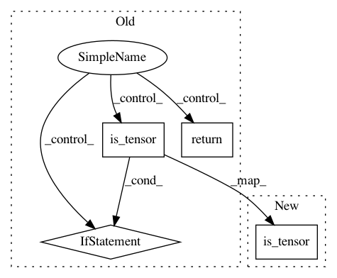

4d249728ee1f4465dee470011119691a9b192046,tensorly/backend/pytorch_backend.py,,to_numpy,#Any#,55
Before Change
ndarray
if torch.is_tensor(tensor) and tensor.cuda:
return tensor.cpu().numpy()
elif torch.is_tensor(tensor):
return tensor.numpy()
if isinstance(tensor, numpy.ndarray):
return tensor
After Change
-------
ndarray
if torch.is_tensor(tensor):
if tensor.requires_grad:
tensor = tensor.detach()
if tensor.cuda:
In pattern: SUPERPATTERN
Frequency: 3
Non-data size: 4
Instances
Project Name: tensorly/tensorly
Commit Name: 4d249728ee1f4465dee470011119691a9b192046
Time: 2018-08-14
Author: jean.kossaifi@gmail.com
File Name: tensorly/backend/pytorch_backend.py
Class Name:
Method Name: to_numpy
Project Name: oval-group/logger
Commit Name: f3d92990400c0ab69ebc726ba24b66d6e4116af7
Time: 2018-03-07
Author: alban@robots.ox.ac.uk
File Name: logger/utils.py
Class Name:
Method Name: to_float
Project Name: tensorly/tensorly
Commit Name: 3448786cf0efede639cb69432cf601aa87257eae
Time: 2018-08-29
Author: johnnygodspood@gmail.com
File Name: tensorly/backend/pytorch_backend.py
Class Name:
Method Name: to_numpy